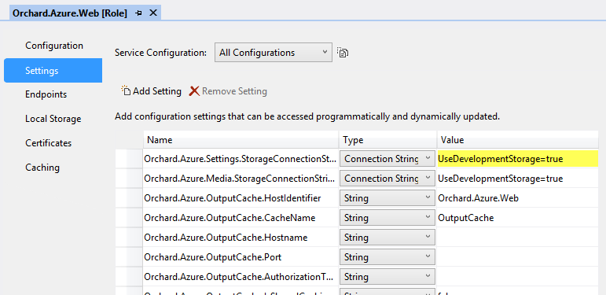
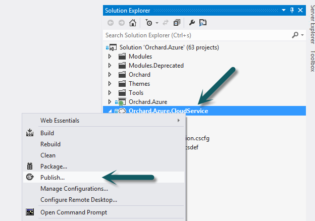
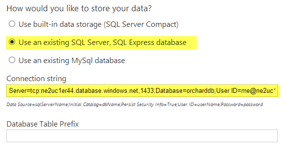
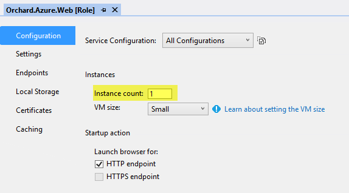
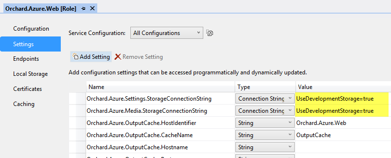

Orchard can be deployed to both Windows Azure Cloud Services and Windows Azure Web Sites. Orchard also ships with a number of integration features that takes advantage of Windows Azure services such as blob storage and caching, and that can be configured before deployment if needed. This topic walks you through the process of deploying Orchard to Windows Azure.
Orchard可以部署到Windows Azure云服务和Windows Azure网站。 Orchard还附带了许多集成功能，这些功能利用了Windows Azure服务（如blob存储和缓存），并且可以在部署之前根据需要进行配置。本主题将指导您完成将Orchard部署到Windows Azure的过程。
NOTE: The Windows Azure deployment process in Orchard has undergone a complete overhaul for version 1.7.1. For more information about what's changed see the What's new for Windows Azure in Orchard 1.7.1 topic.
注意：Orchard中的Windows Azure部署过程已经过1.7.1版的彻底检查。有关更改内容的更多信息，请参阅[Orchard 1.7.1中Windows Azure的新增功能]（Whats-new-for-Windows-Azure-in-Orchard-1-7-1）主题。
NOTE: The
Orchard.Azuresolution for Orchard is not being supported any more in 1.10.1, and will be removed in 1.11. See Cloud Service Support 1.10.x #6972. It is recommended to deploy as an App Service on Azure instead.注意：在1.10.1中，Orchard的“Orchard.Azure”解决方案不再受支持，将在1.11中删除。请参阅[Cloud Service Support 1.10.x＃6972]（https://github.com/OrchardCMS/Orchard/issues/6972）。建议在Azure上部署为[App Service]（https://azure.microsoft.com/en-us/documentation/articles/choose-web-site-cloud-service-vm/）。
Prerequisites
先决条件
Before you can deploy Orchard to Windows Azure you need the following:
在将Orchard部署到Windows Azure之前，您需要以下内容：
-
Visual Studio 2012
-
Visual Studio 2012 *
-
Windows Azure SDK 2.1 for Visual Studio 2012
-
适用于Visual Studio 2012的Windows Azure SDK 2.1 *
-
The Orchard source code
-
Orchard源代码 *
-
An active Windows Azure subscription
-
活动的Windows Azure订阅 *
Deploying Orchard to a Windows Azure Cloud Service
将Orchard部署到Windows Azure云服务
If you only plan to run a single role instance, deploying is extremely simple. Starting with version 1.7.1 of Orchard, deployment can be performed using the Windows Azure tooling in Visual Studio.
如果您只计划运行单个角色实例，则部署非常简单。从Orchard 1.7.1版开始，可以使用Visual Studio中的Windows Azure工具进行部署。
By default, Orchard uses a local file-based SQL Server CE database. This database won't suffice when running in a Windows Azure Cloud Service, because the Windows Azure fabric controller may decide to reimage your role instance at any time, without warning. When that happens, anything that has been written to the local hard drive in your role instance VM since it was created is lost, which means any changes made to the site since it was first deployed will be lost.
默认情况下，Orchard使用基于本地文件的SQL Server CE数据库。在Windows Azure云服务中运行时，此数据库是不够的，因为Windows Azure结构控制器可能会在没有警告的情况下随时决定重新映像您的角色实例。发生这种情况时，自创建以来已在角色实例VM中写入本地硬盘驱动器的任何内容都将丢失，这意味着自首次部署以来对该站点所做的任何更改都将丢失。
Obviously that's not acceptable, so we need to instead store the data in a shared database that will not be affected by role instance reimaging. To do this you need to create a Windows Azure SQL database that will be used to store Orchard data. You will configure Orchard to use this database later during setup.
显然这是不可接受的，因此我们需要将数据存储在不受角色实例重新映像影响的共享数据库中。为此，您需要创建一个用于存储Orchard数据的Windows Azure SQL数据库。您将在以后的安装过程中将Orchard配置为使用此数据库。
With that out of the way, let's start by opening the Orchard.Azure.sln solution in Visual Studio.
有了这个，让我们首先在Visual Studio中打开Orchard.Azure.sln解决方案。
NOTE: If you have AppFabric installed on your local machine (or have AppFabric-related assemblies in the GAC for some other reason) you need to make sure all the following assembly references in the
Orchard.Azure.Webproject have Copy Local set to True before publishing:Microsoft.ApplicationServer.\*,Microsoft.Data.\*,Microsoft.Web.\*,Microsoft.WindowsAzure.\*andMicrosoft.WindowsFabric.\*.注意：如果您在本地计算机上安装了AppFabric（或者由于其他原因在GAC中安装了与AppFabric相关的程序集），则需要确保
Orchard.Azure.Web项目中的所有以下程序集引用都具有 Copy Local 在发布之前设置为 True ：Microsoft.ApplicationServer。\\ *，Microsoft.Data。\\ *，Microsoft.Web。\\ *，Microsoft.WindowsAzure。\\ *和Microsoft.WindowsFabric。 \\ *。
The only thing you have to configure before starting the deployment process is the storage account to use for shell settings. To do this, in Solution Explorer, navigate to Orchard.Azure.CloudService project, double click the Orchard.Azure.Web role and navigate to the Settings tab. Configure the connection string of the storage account you want to use:
在开始部署过程之前，您唯一需要配置的是用于shell设置的存储帐户。为此，在 Solution Explorer 中，导航到Orchard.Azure.CloudService项目，双击Orchard.Azure.Web角色并导航到 Settings 选项卡。配置要使用的存储帐户的连接字符串：

Now to deploy the cloud service, right click the Orchard.Azure.CloudService project in Solution Explorer and select Publish, and follow the instructions in the publishing wizard to select subscription, cloud service, storage account and other publishing options. How to use the Windows Azure publishing tools in Visual Studio is beyond the scope of this topic, but they are pretty self-explanatory:
现在要部署云服务，右键单击 Solution Explorer 中的Orchard.Azure.CloudService项目并选择 Publish ，然后按照发布向导中的说明选择订阅，云服务，存储帐户和其他发布选项。如何在Visual Studio中使用Windows Azure发布工具超出了本主题的范围，但它们非常明显：

Once deployment has successfully completed, browse to the newly deployed Orchard site and go through setup. Specify the connection string to the Windows Azure SQL Database you created earlier:
部署成功完成后，浏览到新部署的Orchard站点并进行设置。指定您之前创建的Windows Azure SQL数据库的连接字符串：

Congratulations! Orchard is now fully configured for a single role instance on Windows Azure.
恭喜！ Orchard现已完全配置为Windows Azure上的单个角色实例。
Using multiple role instances
使用多个角色实例
Let's take it up a notch. You may want to scale out your cloud service to run on more than one role instance, either because you want to support a higher workload, or because the site is mission critical and you need some fault tolerance (using only a single instance of any one role in a Windows Azure Cloud Service voids the Windows Azure SLA).
让我们把它提升一个档次。您可能希望扩展您的云服务以在多个角色实例上运行，这可能是因为您希望支持更高的工作负载，或者因为该站点是关键任务而您需要一些容错（仅使用任何一个实例） Windows Azure云服务中的角色使Windows Azure SLA无效。
Using multiple instances (also known as a web farm or a server farm) with Orchard requires some extra consideration.
在Orchard中使用多个实例（也称为 Web场或服务器场）需要额外考虑。
In the most basic default configuration of Orchard, multiple instances can cause problems:
在Orchard的最基本默认配置中，多个实例可能会导致问题：
- Orchard media files are stored in the local file system. This won't work as the file systems or the different instances will soon start to diverge as users add/remove media.
1. Orchard媒体文件存储在本地文件系统中。这将不起作用，因为文件系统或不同的实例将很快开始分散，因为用户添加/删除媒体。
- Orchard output caching and database caching (NHibernate second-level cache) use local memory for storage. This won't work as content might be updated on one instance and any cached copies invalidated there, while other instances continue unaware of this change.
2. Orchard输出缓存和数据库缓存（NHibernate二级缓存）使用本地内存进行存储。这不起作用，因为内容可能在一个实例上更新，并且任何缓存的副本在那里无效，而其他实例继续不知道此更改。
- Session state is stored in local memory. This won't work because the cloud service load balancer has no session affinity so users will lose their state when moving between instances.
3.会话状态存储在本地存储器中。这不起作用，因为云服务负载均衡器没有会话亲和性，因此用户在实例之间移动时将失去其状态。
Luckily, Orchard has features to overcome each of these complications, but you must configure and enable them.
幸运的是，Orchard具有克服这些复杂功能的功能，但您必须配置并启用它们。
Preparing for multiple instances
准备多个实例
First off, configure the number of instances you want to use in the cloud service project. In Solution Explorer, navigate to Orchard.Azure.CloudService project, double click the Orchard.Azure.Web role and navigate to the Configuration tab. Change the Instance count value from 1 to some higher number:
首先，配置要在云服务项目中使用的实例数。在 Solution Explorer 中，导航到Orchard.Azure.CloudService项目，双击Orchard.Azure.Web角色并导航到 Configuration 选项卡。将 Instance count 值从“1”更改为更高的数字：

NOTE: You can also leave the instance count at
1and change it after deployment through the Windows Azure management portal.注意：您还可以将实例计数保留为“1”，并在部署之后通过Windows Azure管理门户对其进行更改。
Problem #1 in the list above we will deal with by enable the Windows Azure Media Storage feature later. To prepare for this, configure the storage accounts to use for shell settings and media storage. To do this, navigate to the Settings tab. Change the following settings to the storage account connection strings you want to use. You can use the same storage account for both, or any combination of different storage accounts:
我们将在稍后启用 Windows Azure Media Storage 功能处理上面列表中的问题＃1 。要为此做好准备，请配置存储帐户以用于shell设置和媒体存储。为此，请导航至 Settings 选项卡。将以下设置更改为要使用的存储帐户连接字符串。您可以为两者使用相同的存储帐户，也可以使用不同存储帐户的任意组合：

Problem #2 will be addressed by enabling the Windows Azure Output Cache and Windows Azure Database Cache features. These don't need any preparation, as the cloud service project is already preconfigured for co-located role-based caching with the appropriate named caches configured.
问题＃2 将通过启用 Windows Azure输出缓存和 Windows Azure数据库缓存功能来解决。这些不需要任何准备，因为云服务项目已经预先配置为共同定位的基于角色的缓存，并配置了适当的命名缓存。
Problem #3 is already taken care of for us. The cloud service is preconfigured to use the ASP.NET session state provider for Windows Azure Cache. This takes effect immediately after we deploy.
问题＃3 已经为我们处理了。云服务已预先配置为使用Windows Azure Cache的ASP.NET会话状态提供程序。这在我们部署后立即生效。
This section above describes only the most basic configuration steps and options. More detailed steps for enabling the Windows Azure Media Storage, Windows Azure Output Cache and Windows Azure Database Cache features for a Windows Azure Cloud Service, as well as more advanced configuration options, are described the following topics:
以上部分仅介绍最基本的配置步骤和选项。有关为Windows Azure Cloud Service启用 Windows Azure Media Storage ， Windows Azure输出缓存和 Windows Azure数据库缓存功能以及更高级配置选项的更详细步骤，请参阅以下主题：
-
[使用Windows Azure Blob存储]（使用-Windows-Azure-Blob-Storage） *
-
[使用Windows Azure缓存]（使用-Windows-Azure-Cache） *
Deploying
部署
After these few steps of preparation, you are now ready to deploy the cloud service. Right click the Orchard.Azure.CloudService project in Solution Explorer and select Publish, and follow the instructions in the publishing wizard to select subscription, cloud service, storage account and other publishing options. How to use the Windows Azure publishing tools in Visual Studio is beyond the scope of this topic, but they are pretty self-explanatory.
完成这几个准备步骤后，您就可以部署云服务了。右键单击 Solution Explorer 中的Orchard.Azure.CloudService项目并选择 Publish ，然后按照发布向导中的说明选择订阅，云服务，存储帐户和其他发布选项。如何在Visual Studio中使用Windows Azure发布工具超出了本主题的范围，但它们非常明显。
Once deployment has successfully completed, browse to the deployed Orchard site and go through setup. Specify the connection string to the Windows Azure SQL Database you created earlier:
部署成功完成后，浏览到已部署的Orchard站点并进行设置。指定您之前创建的Windows Azure SQL数据库的连接字符串：
Once setup has finished, navigate to the admin dashboard of the site and enable the following three features:
设置完成后，导航到站点的管理仪表板并启用以下三个功能：
-
Windows Azure Media Storage
-
Windows Azure媒体存储 *
-
Windows Azure Output Cache
-
Windows Azure输出缓存 *
-
Windows Azure Database Cache
-
Windows Azure数据库缓存 *
Congratulations! Orchard is now fully configured for multiple role instances on Windows Azure. You can now scale out to as many role instances as you need and things will be handled.
恭喜！ Orchard现已完全配置为Windows Azure上的多个角色实例。您现在可以根据需要扩展到任意数量的角色实例，并处理所有事情。
NOTE: If you set the instance count to more than
1before deploying, you must now restart all role instances once to make sure they pick up the new configuration.注意：如果在部署之前将实例计数设置为大于“1”，则必须立即重新启动所有角色实例，以确保它们选择新配置。
Deploying Orchard to a Windows Azure Web Site
将Orchard部署到Windows Azure网站
Deploying to a Windows Azure Web Site is also done using the Windows Azure tooling in Visual Studio. However, instead of using the Orchard.Azure.sln as described for Windows Azure Cloud Services above, for a Windows Azure Web Site we use the normal Orchard.sln solution and publish the normal Orchard.Web project.
使用Visual Studio中的Windows Azure工具也可以部署到Windows Azure网站。但是，对于Windows Azure网站，我们使用正常的Orchard.sln解决方案并发布正常的Orchard.Web项目，而不是使用上面针对Windows Azure云服务所述的Orchard.Azure.sln。
As with a cloud service, if you only plan to run a single instance, deploying is extremely simple.
与云服务一样，如果您只计划运行单个实例，则部署非常简单。
The steps for using Windows Azure SQL Database as the database are the same as for a cloud service (create a Windows Azure SQL database beforehand and specify its connection string during setup).
使用Windows Azure SQL数据库作为数据库的步骤与云服务相同（事先创建Windows Azure SQL数据库并在安装期间指定其连接字符串）。
Start by opening the Orchard.sln solution in Visual Studio.
首先在Visual Studio中打开Orchard.sln解决方案。
Right click the solution node in Solution Explorer and select Rebuild. This step is necessary to get all modules and themes compiled, thereby having their resulting DLL files included in the published package; compilation of modules and themes does not happen automatically since they are not referenced by the Orchard.Web project being published.
右键单击 Solution Explorer 中的解决方案节点，然后选择 Rebuild 。此步骤是编译所有模块和主题所必需的，从而将生成的DLL文件包含在已发布的包中;模块和主题的编译不会自动发生，因为它们未被发布的“Orchard.Web”项目引用。
To deploy the web site, right click the Orchard.Web project in Solution Explorer and select Publish, and follow the instructions in the publishing wizard. Click the Import button to import a web deploy publishing configuration from your Windows Azure subscriptions. How to use the Windows Azure publishing tools in Visual Studio is beyond the scope of this topic, but they are pretty self-explanatory.
要部署网站，请右键单击 Solution Explorer 中的Orchard.Web项目，然后选择 Publish ，并按照发布向导中的说明进行操作。单击 Import 按钮从Windows Azure订阅中导入Web部署发布配置。如何在Visual Studio中使用Windows Azure发布工具超出了本主题的范围，但它们非常明显。
Once deployment has successfully completed, browse to the newly deployed Orchard site and go through setup. Specify the connection string to the Windows Azure SQL Database you created earlier.
部署成功完成后，浏览到新部署的Orchard站点并进行设置。指定您之前创建的Windows Azure SQL数据库的连接字符串。
Congratulations! Orchard is now fully configured for a single instance Windows Azure Web Site.
恭喜！ Orchard现在已完全配置为单实例Windows Azure网站。
Deploying Orchard using Kudu
使用Kudu部署Orchard
You can optionally configure Windows Azure App Services to use the Kudu service to deploy automatically from your SCM (git, ...).
您可以选择配置Windows Azure App Services以使用Kudu服务从SCM自动部署（git，...）。
When doing so you might want to configure the Kudu service to allow longer times for compilation, or your build could go in timeout and get cancelled. Use the WEBSITE_SCM_IDLE_TIMEOUT_IN_MINUTES = <value> property as explained on this page:
这样做时，您可能希望将Kudu服务配置为允许更长的编译时间，或者您的构建可能会超时并被取消。使用WEBSITE_SCM_IDLE_TIMEOUT_IN_MINUTES = <value>属性，如本页所述：
https://github.com/projectkudu/kudu/wiki/Investigating-issues#deployment-process-got-terminated-due-to-idle-timeout
https://github.com/projectkudu/kudu/wiki/Investigating-issues#deployment-process-got-terminated-due-to-idle-timeout
Using multiple instances
使用多个实例
As with cloud services, you need to do a little more configuration if you plan to scale out your web site to more than one instance.
与云服务一样，如果您计划将网站扩展到多个实例，则需要进行更多配置。
The steps for enabling the Windows Azure Media Storage, Windows Azure Output Cache and Windows Azure Database Cache features for a Windows Azure Web Site are described the following topics:
以下主题描述了为Windows Azure网站启用 Windows Azure Media Storage ， Windows Azure输出缓存和 Windows Azure数据库缓存功能的步骤：
-
[使用Windows Azure Blob存储]（使用-Windows-Azure-Blob-Storage） *
-
[使用Windows Azure缓存]（使用-Windows-Azure-Cache） *